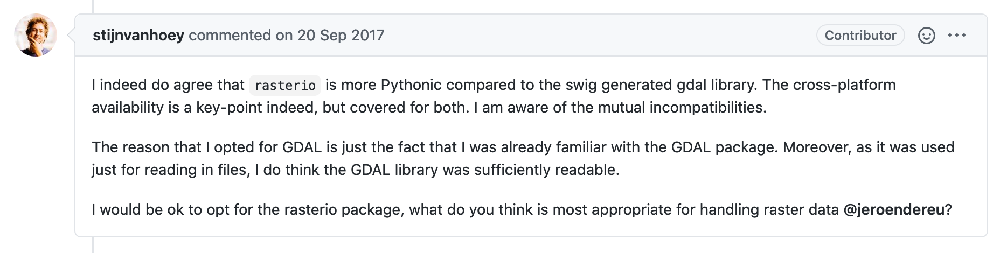

Part 1: Introduction to Advanced Geo Data Processing¶
Heidelberg University | Institute of Geography | August 10th 2020
Christina Ludwig
Python packages ogr and gdal enable vector and raster data processing¶
ograndgdalare automatically generated Python bindings (using SWIG) to the C libraries GDAL and OGR
So when you use
ograndgdalclasses in Python you are actually executing C code.
→ Great! C is fast and we can use it from Python.
So why would we need other Python packages for geo data processing?¶
In discussions about Python you will often read statements like this:

Source: GitHub Issue - rasterio vs python gdal #11
In this assignment we will focus on the following questions:¶
What does Pythonic mean?
Why is it prefered by Python developers? Why is it suitable for scientists?
Why are ogr and gdal not Pythonic enough?
What are the advantages and disadvantages of using more pythonic packages for geo data processing?
Which one do you prefer?
Let’s start with the assignment!¶
This is the first of 3 Jupyter notebooks belonging to the assignment on “Advanced Geo Data Processing”. You need to work through all of them to complete the assignment. For the discussion in the course the first one is most important. So please make sure to start with this one.
–> 1. Introduction to Advanced Geo Data Processing (this notebook)
–> 2. Noteboook on Vector Data Processing
–> 3. Noteboook on Raster Data Processing
In this first section of the assignment we will compare three different ways of representing a polygon in Python.
A very simplified, pure Python implementation written by yourself.
The ``Geometry`` class provided by ``ogr`` package.
The ``Polygon`` class provided by the ``shapely`` package.
Execution time
Programming time (how long did it take to write the code)
Readability
Flexibility (how easily can you adapt it to your needs)
1. Creating your own Polygon class in Python¶
For this first exercise you will need some basic knowledge of object oriented programming.
Write a class called
MyPolygonwhich takes a list of tuples containing the coordinates of the polygon for initialization. The coordinates should be stored as an attribute of the instance called “coordinates”. Use thetest_coordinatesbelow to test your class.
[1]:
test_coordinates = [(1,1),(1,2),(2,2),(2,1),(1,1)]
[2]:
class MyPolygon:
def __init__(self, coordinates):
self.coordinates = coordinates
def envelope(self):
pass
[3]:
my_poly = MyPolygon(test_coordinates)
Test whether the instance of class Polygon returns the right value. If there is not error message, everything’s fine.
[4]:
assert my_poly.coordinates == test_coordinates
Calculate Bounding Box: Add a method
envelopewhich calculates the bounding box of the polygon. The method should return the bounding box as a list containing the coordinates of the bounding box[min_x, min_y, max_x, max_y].
Note: A bounding box is often reffered to as the envelope of a geometry.
[5]:
class MyPolygon():
def __init__(self, coordinates):
self.coordinates = coordinates
def envelope(self):
"""
Calculates the bounding box (or envelope) of the polygon.
"""
xcoords = [x for x, y in self.coordinates]
ycoords = [y for x, y in self.coordinates]
minx = min(xcoords)
maxx = max(xcoords)
miny = min(ycoords)
maxy = max(ycoords)
return [minx, miny, maxx, maxy]
[6]:
my_poly = MyPolygon(test_coordinates)
[8]:
my_poly_env = my_poly.envelope()
print("minX: {0}, minY: {1}, maxX: {2}, maxY: {3}".format(*my_poly_env))
minX: 1, minY: 1, maxX: 2, maxY: 2
Alternative using numpy:
[9]:
import numpy as np
[10]:
class MyPolygon():
def __init__(self, coordinates):
self.coordinates = np.array(coordinates)
def envelope(self):
"""
Calculates the bounding box (or envelope) of the polygon.
"""
xcoords = self.coordinates[:,0]
ycoords = self.coordinates[:,1]
minx = xcoords.min()
maxx = xcoords.max()
miny = ycoords.min()
maxy = ycoords.max()
return [minx, miny, maxx, maxy]
2. Calculate bounding box using ogr.Geometry¶
So you’ve created a very simple Polygon class in Python with just a few lines of code. Now let’s compare your implementation to the one provided by the ogr package.
1. Use ogr package to create a polygon object using the same test_coordinates as above.¶
[18]:
import ogr
[19]:
# Create ring
ring = ogr.Geometry(ogr.wkbLinearRing)
for c in test_coordinates:
ring.AddPoint(c[0], c[1])
# Create polygon
ogr_poly = ogr.Geometry(ogr.wkbPolygon)
ogr_poly.AddGeometry(ring)
[19]:
0
2. Calculate the envelope of the polygon.¶
[27]:
ogr_poly_env = ogr_poly.GetEnvelope()
print("minX: {0}, minY: {2}, maxX: {1}, maxY: {3}".format(*ogr_poly_env))
minX: 1.0, minY: 1.0, maxX: 2.0, maxY: 2.0
Are the results from your class and the ogr class the same? If not check your code.
Note: Remember that the order of the coordinates of the bounding box returned by ogr method is [min_x, max_x, min_y, max_y].
3. Calculate bounding box using shapely¶
Those were a lot of lines just for creating a simple polygon. For this reason, shapely was developed. Creating a geometry using shapely works the same way as for our Python implementation.
1. Use shapely package to create a polygon object using the same test_coordinates as above.¶
[33]:
from shapely.geometry import Polygon
[35]:
shapely_poly = Polygon(test_coordinates)
shapely_poly
[35]:
2. Calculate the bounding box of the shapely polygon using the method bounds().¶
[45]:
print("minX: {}, minY: {}, maxX:{}, maxY: {}".format(*poly_shapely.bounds))
minX: 1.0, minY: 1.0, maxX:2.0, maxY: 2.0
4. Comparison of execution time¶
Compare the exectution times of both methods using the magic command %%timeit. This function will execute the cell multiple times to get a good estimate of the execution time.
4.1. Compare calculation of bounding box¶
[29]:
%%timeit
my_poly.envelope()
1.87 µs ± 45.1 ns per loop (mean ± std. dev. of 7 runs, 100000 loops each)
[28]:
%%timeit
ogr_poly.GetEnvelope()
575 ns ± 18 ns per loop (mean ± std. dev. of 7 runs, 1000000 loops each)
[43]:
%%timeit
poly_shapely.bounds
33.1 µs ± 1.19 µs per loop (mean ± std. dev. of 7 runs, 10000 loops each)
Question: What do you observe when you compre the execution times of all three methods? Can you explain the difference in execution times?
Answer:
4.2 Comparison bounding box creation and object creation¶
When choosing the most efficient way to calculate something, we also need to consider the overhead of the calculation. The overhead contains all the processing steps that need to be taken as a preparation before the execution of the desired calculation. Depending on the implementation, this can change your decision.
Exercise: Measure the execution times of all three implementations including the object createion.
[49]:
%%timeit
my_poly = MyPolygon(test_coordinates)
my_poly_env = my_poly.envelope()
13.3 µs ± 614 ns per loop (mean ± std. dev. of 7 runs, 100000 loops each)
[50]:
%%timeit
# Create ring
ring = ogr.Geometry(ogr.wkbLinearRing)
for c in test_coordinates:
ring.AddPoint(c[0], c[1])
# Create polygon
poly_ogr = ogr.Geometry(ogr.wkbPolygon)
poly_ogr.AddGeometry(ring)
poly_ogr_env = poly_ogr.GetEnvelope()
16.5 µs ± 588 ns per loop (mean ± std. dev. of 7 runs, 100000 loops each)
[53]:
%%timeit
shapely_poly = shapely.geometry.Polygon(shell=test_coordinates)
poly_shapely.bounds
44.7 µs ± 1.05 µs per loop (mean ± std. dev. of 7 runs, 10000 loops each)
Question: What do you observe when you compre the execution times and the object creation of all three polygon implementations? Can you explain the difference in execution times?
Your Answer:
[ ]:
Questions for Discussion:¶
Evaluate the three methods in the table below. (Double click the cell, to edit it)
Execution time (fast - slow) |
Programming time (fast - slow) |
Readability (high - low) |
Flexibility (high - low) |
|
|---|---|---|---|---|
DIY Python |
fast |
slow |
high |
high |
OGR |
very fast |
medium |
low |
mostly sufficient |
Shapely |
quite slow |
fast |
high |
mostly sufficient |
Try to answer the questions from the beginning of the notebook. 1. First try to answer them on your own. 2. Then discuss them in groups or pairs with your peers.
Please provide your answers below.
Answer 1:
Answer 2:
Answer 3:
Answer 4:
Answer 5: